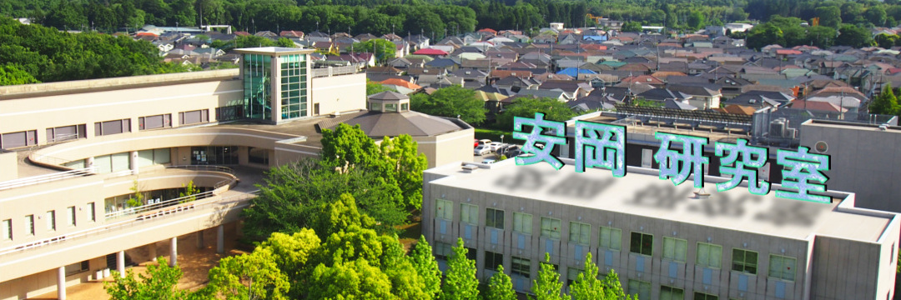

-

-

お知らせ
- 2017年10月17日 高大連携授業 「体験Webアニメーション」 学生作品
- 2016年オープンキャンパスWEBサイト（2016年度3年ゼミ生制作）
- 2015年翔風祭安岡ゼミ生作品集（2015年度3年ゼミ生制作）
- 2015年オープンキャンパスWEBサイト（2015年度3年ゼミ生制作）
- ◎2015年安岡ゼミ共同研究 投稿掲示板
- ゼミ生、受講生のFlashアニメーション作品集
- 2014年オープンキャンパスWEBサイト（2014年度3年ゼミ生制作）
- 2013年8月3日 オープンキャンパスWEBサイト
- 研究目的のアンケート(アンケート)※ロックあり
- マニュアル資料
- はじめてのFlash
- 。。
2017年オープンキャンパスwebサイト(2017年度3年ゼミ生制作)